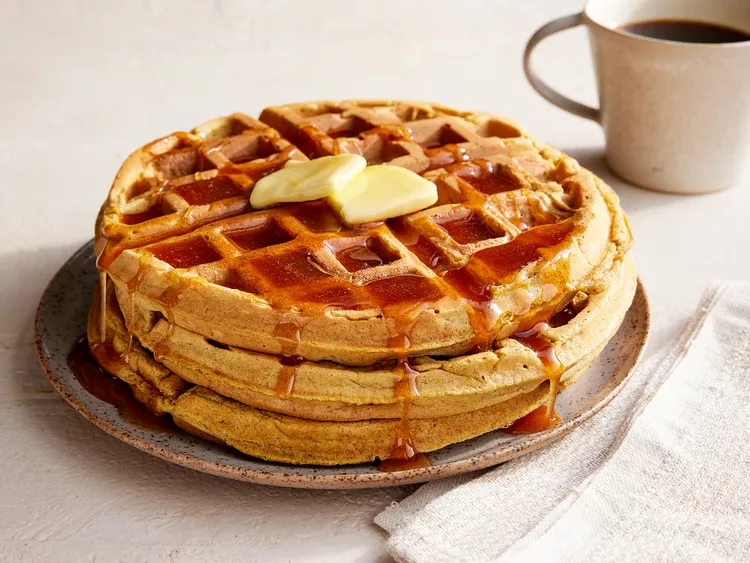

Home
Pumpkin Waffles

Description
These pumpkin waffles are soft, fluffy, and filled with warm fall spices.
They are perfect for breakfast and taste even better with homemade apple cider syrup.
The recipe combines pumpkin puree, cinnamon, ginger, and allspice to create
delicious waffles with a cozy autumn flavor.
Ingredients
- 2 ½ cups all-purpose flour
- ¼ cup packed brown sugar
- 4 teaspoons baking powder
- 2 teaspoons ground cinnamon
- 1 teaspoon ground allspice
- 1 teaspoon ground ginger
- ½ teaspoon salt
- 2 cups milk
- 1 cup canned pumpkin puree
- 4 large eggs, separated
- ¼ cup butter, melted
Apple Cider Syrup Ingredients
- ½ cup white sugar
- 1 tablespoon cornstarch
- 1 teaspoon ground cinnamon
- 1 cup apple cider
- 1 tablespoon lemon juice
- 2 tablespoons butter
Steps
- Preheat a waffle iron according to the manufacturer’s instructions.
- Combine flour, brown sugar, baking powder, cinnamon, allspice, ginger, and salt in a mixing bowl.
- In another bowl, stir together milk, pumpkin puree, and egg yolks.
- Whip the egg whites in a clean dry bowl until soft peaks form.
- Stir the flour mixture and melted butter into the pumpkin mixture until combined.
- Fold one-third of the egg whites into the batter, then gently fold in the remaining egg whites.
- Cook the waffles in the preheated waffle iron according to the manufacturer’s instructions.
- To make the syrup, combine sugar, cornstarch, and cinnamon in a saucepan.
- Stir in apple cider and lemon juice, then cook over medium heat until thickened.
- Remove from heat and stir in butter until melted.
- Serve the waffles warm with apple cider syrup.